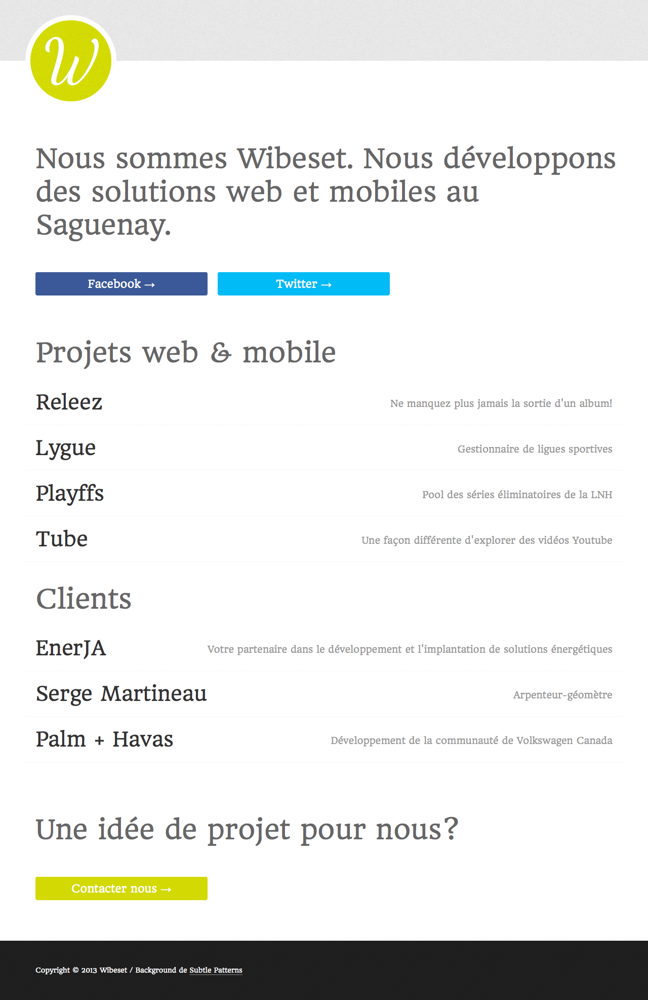

" Perfection is achieved, not when there is nothing more to add, but when there is nothing left to take away. " - Antoine de Saint-Exupery
When I'm building a new functionnality, I'm always thinking about this quote from Antoine de Saint-Exupery. What do I really need to achieve my goal ? What else can I remove to get this new functionnality simplier ? Simplicity and clarity lead to good design. Less is more.
So I came up with the idea to redesign Wibeset.com. In fact, I think I redesign Wibeset.com once a year. Anyway, I had the idea to make it fit in a window. I mean no scrolling. The only thing I have really remove is clients because I focus I have decide to focus on homemade projects like Lygue.
Most of the time 100% of the time, I build websites with white background. This time, I going for a darker one and I like it... probably until next year I guess.
Previous version

And now...